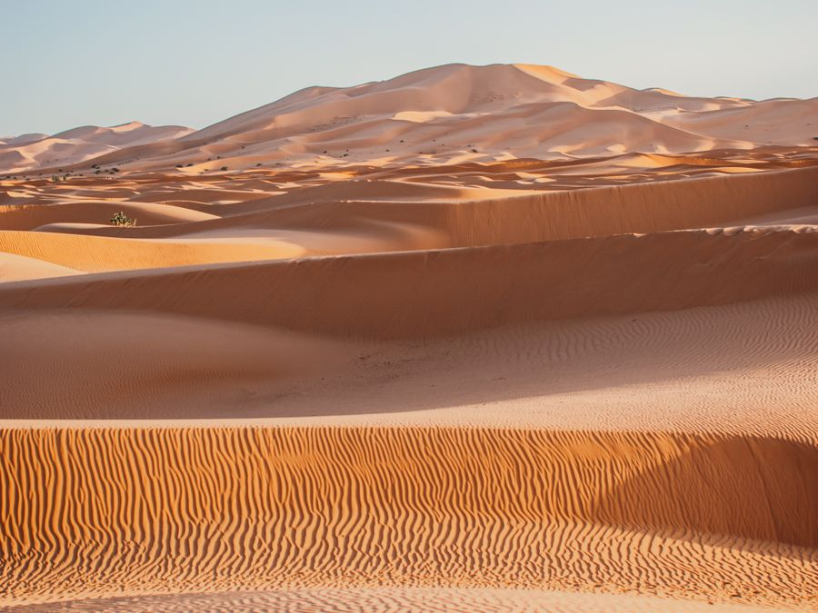
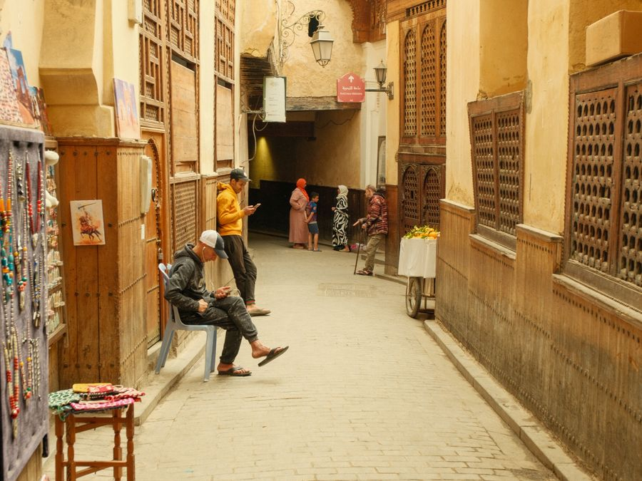
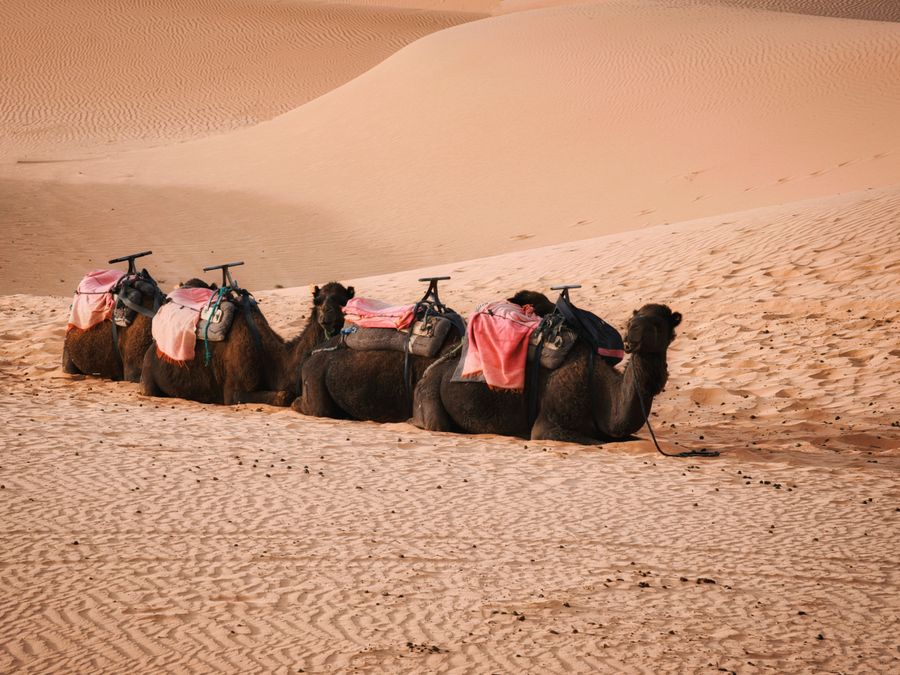
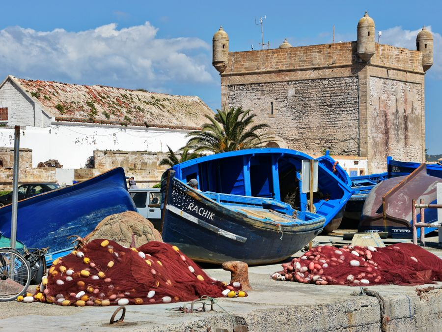

Private tour · 15 days / 14 nights
15 Days Morocco Tour from Tangier: Imperial Cities, Sahara, Agadir & Essaouira
Two weeks to discover Morocco properly: two nights in Chefchaouen, Fes and the Sahara, the kasbah route, the Anti-Atlas to Taroudant, the beaches of Agadir, two nights in Essaouira, Marrakech and Rabat, and back to Tangier.
- 100% private tour
- Round trip from Tangier
- Sahara camp night
- Free cancellation up to 14 days
The grand tour, at a slow pace
With free days in Chefchaouen and Essaouira, this is the most relaxed way to see the whole country, from the Rif mountains to the southern Atlantic coast.
About 2,900 km in fifteen days, with several short or free days. The tour starts and ends in Tangier, perfect if you travel by ferry from Spain.
- Tangier
- Chefchaouen
- Volubilis
- Fes
- Merzouga
- Todra Gorge
- Dades Valley
- Ait Ben Haddou
- Taroudant
- Agadir
- Essaouira
- Marrakech
- Casablanca
- Rabat
- Tangier
15-day itinerary step by step
1Tangier – Tetouan – Chefchaouen≈ 120 km · 2.5 h
Pick-up at your hotel, the port or the airport in Tangier. Short drive through the Rif, with an optional stop in the white medina of Tetouan (UNESCO), and afternoon walk in the blue streets of Chefchaouen.
2Chefchaouen: free day or Akchour waterfalls≈ 70 km · optional
Enjoy Chefchaouen at your own pace, or hike to the Akchour waterfalls and God’s Bridge in the Talassemtane National Park with your driver.
3Chefchaouen – Volubilis – Meknes – Fes≈ 280 km · 6 h
Drive south to the Roman ruins of Volubilis (UNESCO), pass the holy town of Moulay Idriss and visit Meknes, the city of Sultan Moulay Ismail, before reaching Fes.
4Fes: guided visit of the medinacity day
Discover Fes el-Bali with a licensed local guide: the Bou Inania madrasa, the Chouara tanneries, the Al Quaraouiyine area and the artisans’ souks. Free afternoon.
5Fes – Ifrane – Midelt – Ziz Valley – Merzouga – camel trek≈ 470 km · 8–9 h
Leave Fes in the morning and cross the Middle Atlas via Ifrane and the cedar forest of Azrou, home of the Barbary macaques. After lunch in Midelt, follow the palm groves of the Ziz Valley to Merzouga. Ride a camel into the Erg Chebbi dunes at sunset and sleep in a desert camp.
6Merzouga – Rissani – Todra Gorge – Dades Valley≈ 300 km · 6–7 h
Watch the sunrise from the dunes, then drive west via Rissani and Tinghir. Walk between the 300 m rock walls of Todra Gorge and continue to the Dades Valley for the night.
7Dades – Skoura – Ouarzazate – Ait Ben Haddou≈ 170 km · 4–5 h
Follow the Road of a Thousand Kasbahs through the Rose Valley and the Skoura oasis. Visit Ouarzazate, the gateway to the Sahara, and end the day in the earthen ksar of Ait Ben Haddou.
8Ait Ben Haddou – Taliouine – Taroudant≈ 300 km · 5 h
Head south-west across the Anti-Atlas via Taliouine, the saffron capital, to Taroudant, the “little Marrakech” inside its ochre ramparts.
9Taroudant – Agadir≈ 85 km · 1.5 h
Short drive to Agadir. Afternoon on the long sandy beach and at the Kasbah viewpoint above the bay.
10Agadir – Taghazout coast – Essaouira≈ 175 km · 3 h
Coastal road past the surf village of Taghazout and argan trees where goats climb, to Essaouira for the night.
11Essaouira: free day by the oceanfree day
A day at the Atlantic: the medina and the Skala ramparts, the fishing port, the beach, a cooking class or kitesurfing.
12Essaouira – Marrakech≈ 190 km · 3 h
Morning by the ramparts and the blue fishing boats of the harbour, then return inland through the argan forest to Marrakech.
13Marrakech: guided city visitcity day
Visit Marrakech with a local guide: the Bahia Palace, the Koutoubia, the Saadian Tombs and the souks, then Jemaa el-Fna square as it comes alive at dusk.
14Marrakech – Casablanca – Rabat≈ 330 km · 4.5 h
Highway north to Casablanca for the Hassan II Mosque on the ocean, then Rabat and the Kasbah of the Udayas for the night.
15Rabat – Asilah – Tangier≈ 250 km · 3.5 h
Drive north along the Atlantic to Asilah, a whitewashed seaside town famous for its murals, and end the tour at your hotel, the port or the airport in Tangier.
What you will see and do




What is included in your private tour
Included
- Private air-conditioned car or minivan
- English or Spanish-speaking driver
- Fuel, tolls and parking
- Accommodation: 13 nights in hotels and riads + 1 night in a desert camp
- Breakfast and dinner during the tour
- Camel ride and desert camp
- Pick-up in Tangier
Not included
- Lunches and drinks
- Entrance fees (kasbahs, monuments, museums)
- Local guides in the cities (optional)
- Tips and travel insurance
Questions about the 15 Days Morocco Tour from Tangier
Is 15 days too long for Morocco?
Not at all: it lets you include the south (Taroudant, Agadir) and free days, which shorter tours skip.
Can we change the order or skip Agadir?
Yes, every tour is private and tailor-made. We can replace Agadir with more time in the desert or the mountains.
How do I book the tour?
Send us your dates by WhatsApp or the contact form. You confirm with a 20% deposit and pay the rest in Morocco. Cancellation is free up to 14 days before departure.
Ready to go?
Tell us your dates and we will organise your private tour: 15 Days Morocco Tour from Tangier.
Chat on WhatsAppSee all tours from Tangier